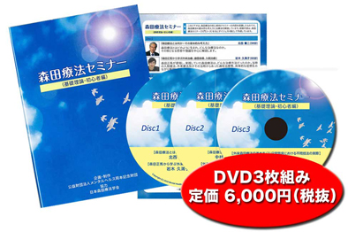
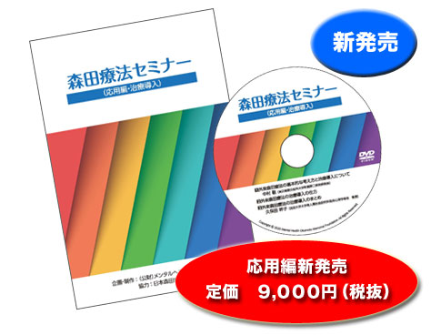
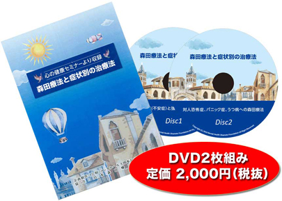

概 要
- 森田療法は、1919年、森田正馬（慈恵会医科大学教授）が創始した神経症に対する独自の精神療法です。現在、森田療法は神経症（強迫性障害、恐怖症性不安障害、パニック障害などの不安障害）に適合し、さらに慢性化したうつ病にも応用されています。
- 下記の3つのビデオは、日本森田療法学会の協力を得て作成した、森田療法を学習するための初心者向けのビデオです。森田療法を解説する講師陣は、日本森田療法学会に所属し、森田療法を実際に病院やクリニックで活用している、実績のある著名な専門家の先生です。
ビデオ内容
- 森田療法セミナー（基礎理論・初心者編）
このビデオは、森田療法の初心者向けセミナーの内容を収録したものです。 森田療法の基本的な考え方と治療法を解説しています。収録内容は、森田療法セミナー（入門コース）を元にダイジェスト版として作成しています。これは主に森田療法を学びたい専門家向けの学習ビデオです。 - 森田療法セミナー（応用編・治療導入）

このビデオは、森田療法セミナー（基礎理論・初心者編）に続く実際の応用編として、治療導入時の基本的な考え方とその手順を示したものです。 当ビデオは日本森田療法学会の「外来森田療法のガイドライン」及び森田療法の効果判定に関する委員会がまとめた「治療導入マニュアル」に基づいて作成されています。 - 森田療法と症状別の治療法
このビデオは、当財団が開催した心の健康セミナーの内容を収録したものです。森田療法の基本的な入門講座内容と共に、神経症（対人恐怖症）、強迫症、パニック症、うつ病など代表的な4つの症状の解説と症状別の治療法を説明した内容で、主に一般の方向けに作成しています。
森田療法セミナー（基礎理論・初心者編）のディスク内容
- 第1巻（Disc-1）
- Program1
「森田療法とは～基本的な考え方」（59分）
北西 憲二（森田療法研究所・北西クリニック院長） - Program2
「森田療法から学ぶ外来治療、通信指導、入院治療」（65分）
岩木 久満子（顕メンタルクリニック院長）
- Program1
- 第2巻（Disc-2）
- Program3
「森田療法の適応と治療形態」（55分）
中村 敬（東京慈恵会医科大学附属第三病院 病院長） - Program4
「外来森田療法の進め方（1）日記療法」（57分）
久保田 幹子（法政大学大学院教授）
- Program3
- 第3巻（Disc-3）
- Program5
「外来森田療法の進め方（2）日常臨床における不問技法の実際」（65分）
橋本 和幸（橋本クリニック院長） - Program6
「外来森田療法の進め方（3）実際の手順、まとめ」（42分）
立松 一徳（立松クリニック院長）
- Program5

森田療法セミナー（応用編・治療導入）のディスク内容
- 第1巻（Disc-1）
- 外来森田療法のん基本的な考え方と治療導入
中村 敬（東京慈恵会医科大学附属第三病院 病院長） - 外来森田療法の治療導入の仕方
久保田 幹子（法政大学大学院教授）
・聞き取り（実演）
・見立て（実演）
・治療目標の共有（実演） - 外来森田療法の治療導入のまとめ
久保田 幹子（法政大学大学院教授）
- 外来森田療法のん基本的な考え方と治療導入

森田療法と症状別の治療法のディスク内容
- 第1巻（Disc-1）
- 神経質の概念 森田療法とはどんな治療法か
・1-1 森田療法入門講座
・1-2 森田正馬の神経質概念とは - 入院森田療法と外来森田療法
・1-3 入院森田療法について
・1-4 外来森田療法について - 強迫症に対する森田療法
・1-5 強迫性障害に対する森田療法
- 神経質の概念 森田療法とはどんな治療法か
- 第2巻（Disc-2）
- 社交不安症（対人恐怖症）に対する森田療法
・2-1 社交不安性障害（対人恐怖症）の森田療法
・2-2 森田療法の社交不安症への治療法 - うつ病に対する森田療法
・2-3 不安・うつから回復する手立てとは
・2-4 うつに対する森田療法 - パニック症に対する森田療法
・2-5 パニック症に対する森田療法
・2-6 不安・こだわりに縛られた生活から自由な生き方へ
- 社交不安症（対人恐怖症）に対する森田療法
- 講師紹介（50音順）
- 岩木 久満子（顕メンタルクリニック院長）
- 久保田 幹子（法政大学大学院教授）
- 舘野 歩（東京慈恵会医科大学附属第三病院 診療部長）
- 中村 敬（東京慈恵会医科大学附属第三病院 病院長）
- 星野 良一（香流会紘仁病院精神科 浜松医科大学精神神経科）

価格とお申し込み方法
- 森田療法セミナー（基礎理論・初心者編）6,000円（税抜）
- 森田療法セミナー（応用編・治療導入）9,000円（税抜）
- 森田療法と症状別の治療法 2,000円（税抜）
- 下記の申し込みフォーム又はファックスでお申し込み下さい。
- お支払い方法は、銀行振込と代引きの2つからお選びいただけます。
電話（06-6809-1211）でもご注文可能です。
森田療法セミナーDVD申込みフォーム
まず、ご購入を希望される種別および数量をお選び下さい。
| 種別 | 特別価格（税抜） | 数量 |
|---|---|---|
| 森田療法と症状別の治療法 | ¥2,000 | |
| 森田療法セミナー（基礎理論・初心者編） | ¥6,000 | |
| 森田療法セミナー（応用編・治療導入） | ¥9,000 | |
| 森田療法セミナー（基礎理論＆応用編） | ¥14,500 |